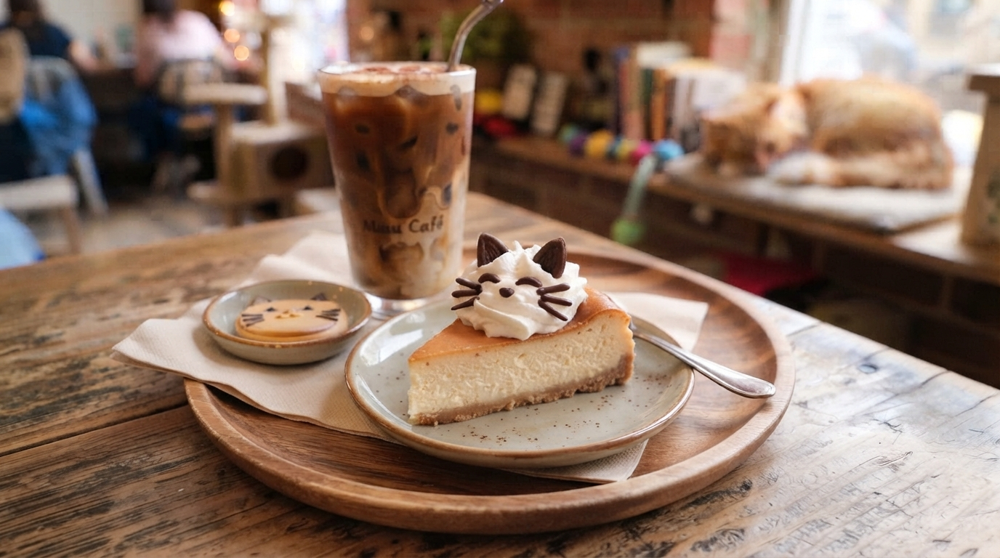
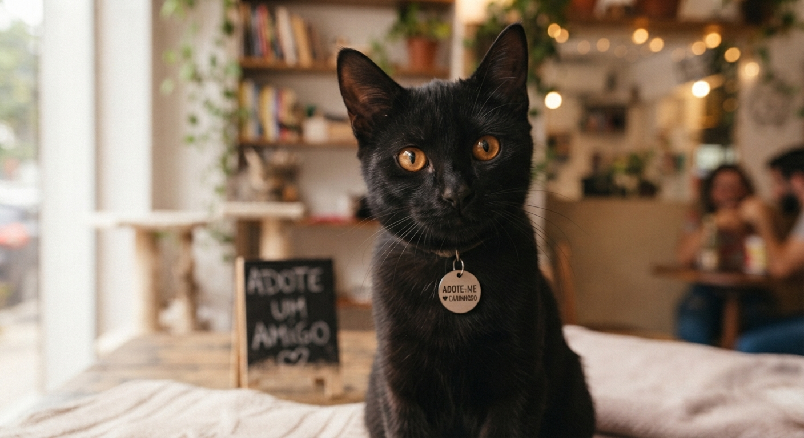

Cafeteria com gatos em Gatolândia
Café fresco e ronronar de fundo.
Um espaço tranquilo para tomar um bom café, comer algo assado aqui de manhã e dividir o sofá com quem já mora aqui.
Explore o espaço
Escolha por onde começar
Quatro páginas curtas: o que a gente serve, quem mora aqui, como a casa começou e quem procura um lar.

Nosso Cardápio
Cafés, bebidas geladas, doces e salgados preparados por aqui.
Saiba mais
Nossos Gatinhos
Quatro gatos, quatro jeitos de ocupar o mesmo sofá.
Saiba mais
Sobre Nós
Como a casa começou e por que os gatos vieram antes do balcão.
Saiba mais
Adote
Os quatro moradores estão disponíveis para adoção. Veja quem procura um lar.
Saiba mais